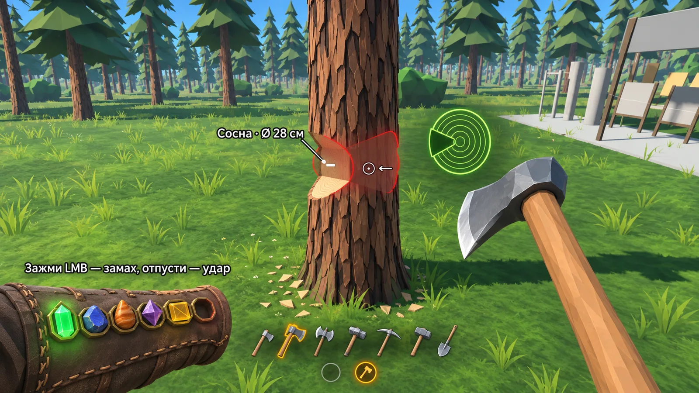
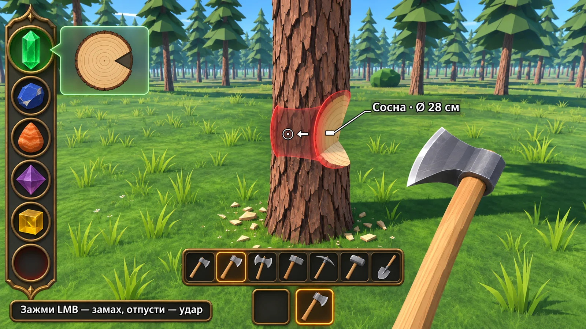
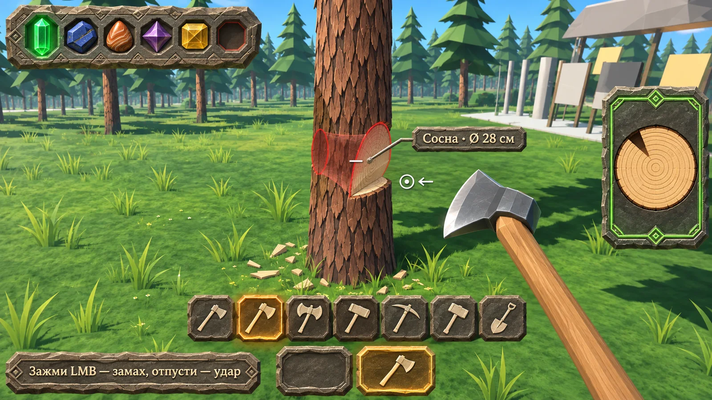
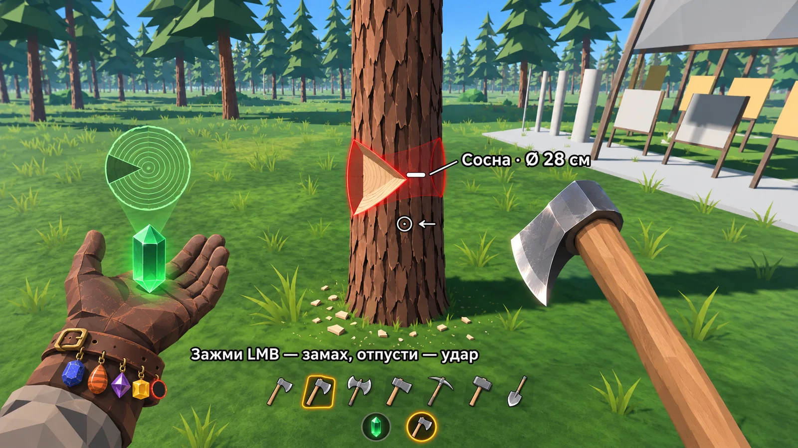
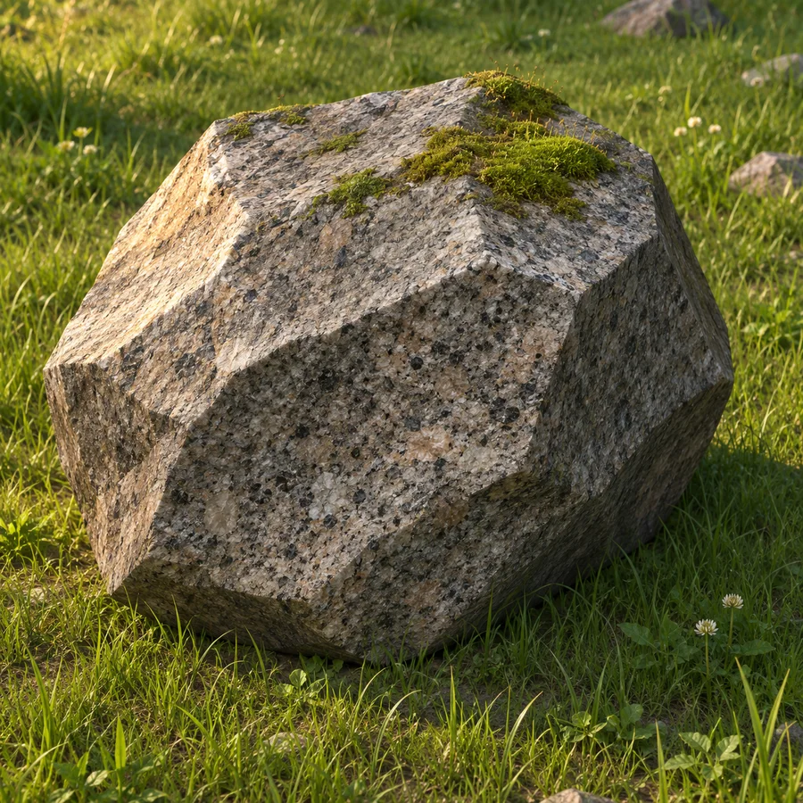
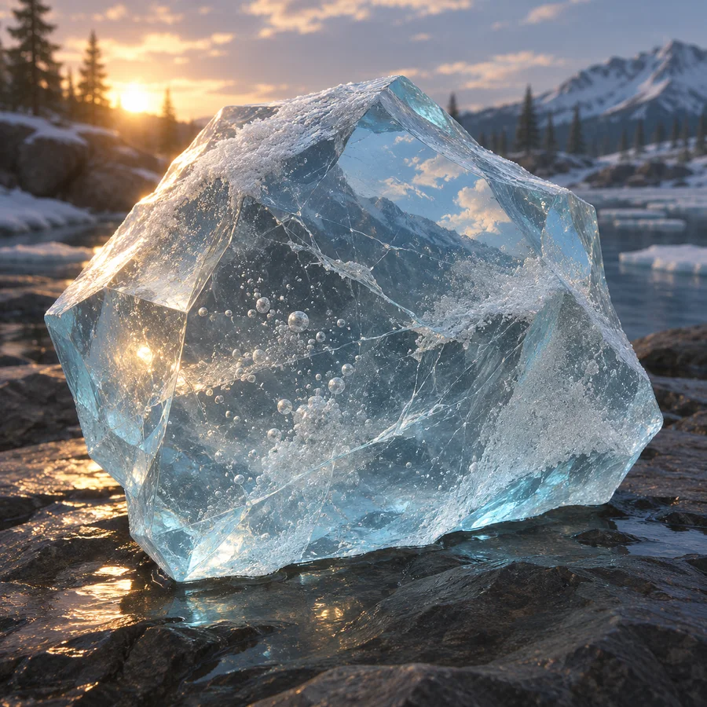
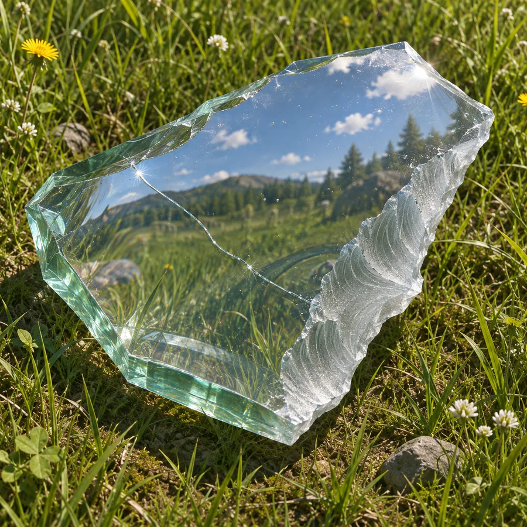
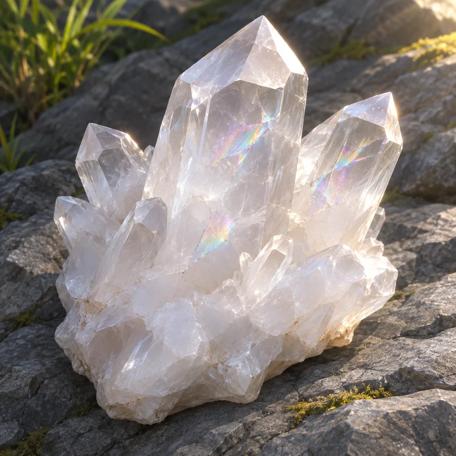
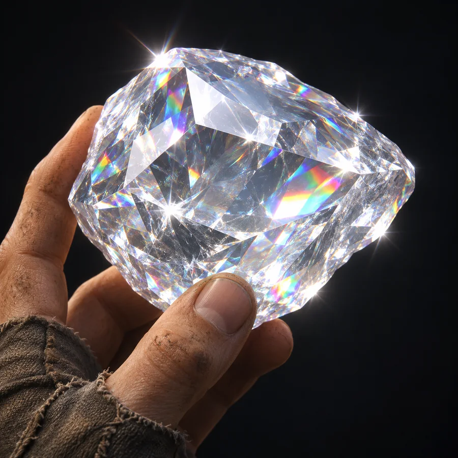
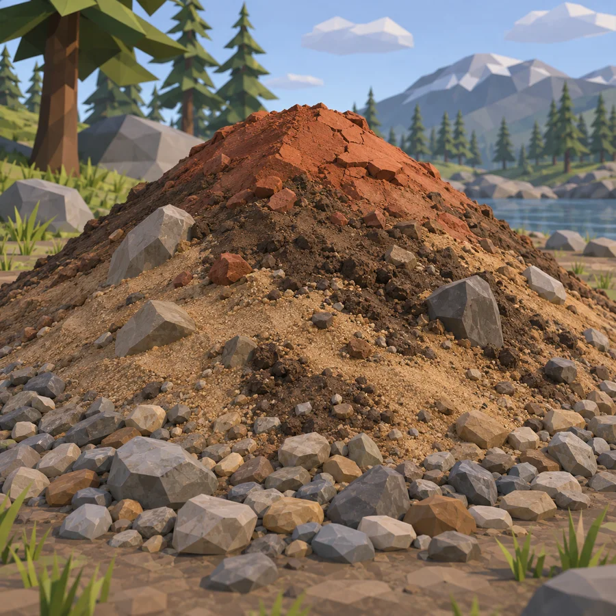

POLUS — выбери стиль
Концепты нарисованы в Codex по списку «что на экране должно быть видно и чего не должно» (задача 63). Сцена у всех одна (цифры 1–7 под инструментами Codex не нарисовал ни в одном — это мелочь, в игре они будут): топор у сосны, активен зелёный камень дровосека, красным показаны вход и выход удара. Нажми на картинку, чтобы открыть её крупно.
Как ответить: буква интерфейса (А, Б, В, Г) или «смесь: что откуда»; по материалам — что нравится и что поменять; по вопросам внизу — номера, где не согласен, или «остальное по рекомендации».
1. Интерфейс с камнями экспертизы

АБраслет
Почти без интерфейса: камни в оправах на кожаном браслете левой руки, разрез ствола висит в воздухе, без рамок.
Сделать: 3–4 дня + 4 дня на элементы
Риск: самый мелкий на экране — камни должны читаться с телефона
Второй глаз (Gemini Flash): 6/10 — разрез висит в воздухе ни к чему не привязан, браслет без руки

БРейка с гнёздами
Классический чистый игровой интерфейс: камни в бронзовой рейке слева, у активного выезжает стеклянная карточка с разрезом.
Сделать: 1 день + 3–4 дня на элементы
Риск: больше всех похож на обычный HUD, меньше всего «камней бесконечности»
Второй глаз (Gemini Flash): 9/10 — самый ясный, читается с телефона

ВКаменные таблички
Всё из тёсаного камня с самоцветами: перемычка с камнями сверху слева, высокая табличка с разрезом справа.
Сделать: 1 день + 5–6 дней на элементы (их больше всех)
Риск: самый тяжёлый на вид, больше всего закрывает мир
Второй глаз (Gemini Flash): 8/10 — ясный, но тяжёлые плиты по краям

ГКамень на ладони
Интерфейс — твоя левая рука: светящийся камень над ладонью, над ним голограмма разреза, остальные камни висят на ремешке.
Сделать: 5–7 дней (нужна левая рука в кадре и привязка голограммы)
Риск: занимает левый низ кадра; сейчас при хвате двумя руками левая рука держит топор
Второй глаз (Gemini Flash): 5/10 — рука с голограммой закрывает четверть кадра, камни на ремешке на телефоне не различить
2. Материалы — эталон вида для HD-текстур
По выбранному виду Codex нарисует 31 бесшовную текстуру, а скрипт выведет из них рельеф (карты нормалей). В игре форма останется low-poly, с этой поверхностью.

Гранит

Лёд

Стекло

Кварц (молочный)

Алмаз

Сыпучие: гравий, песок, земля, глина
3. Что ещё решить (рекомендация — как написано)
- Земля без вокселей: слоистая карта высот, слои рисуются по пикселю. Получаются чёткие полосатые стенки ям и пласты угля, которые выходят на склоне. Туннелей и пещер в MVP нет, яма до 4–6 м, твёрдый камень лопатой не берётся. Это 11–17 дней; воксели заняли бы 20–60 дней с риском лагов в браузере. Рекомендую.
- Закон материи:
- Подарками считаются: стартовый набор, склад полигона с табличкой «только здесь», рост ягод и травы. Дым и пар уходят в воздух.
- Металл пока берётся с полигона, руда и плавка — позже.
- Гниение считается по массе: щепа превращается в гумус меньшей массы, а не литр в литр.
- 6 кнопок смены материала головки в панели предмета убираю — их заменит крафт.
- Износ по физике: медная или железная кирка о гранит тупится за 3–10 ударов (сейчас за 66), стальной топор — примерно за 30 сосен, головка может треснуть. Числа прошлой волны поменяются. Рекомендую.
- Крафт: сначала меню в инвентаре, его дизайн тоже через концепт; позже — крафт прямо в мире. Рекомендую.
- Камни: в MVP всегда при тебе: 5 камней (дровосек, каменщик, землекоп, материаловед, строитель) и пустое гнездо кузнеца. Покачивание дерева и подсказки видны всем и без камня. Рекомендую.
- Кнопки полигона — в мир, все: питомник деревьев, образцы камня, песочные часы, рычаги у рядов, стойка инструментов. Это 8–9 дней; вариант попроще — один пульт за 3 дня. Рекомендую все.
- Текстуры: экономный бюджет — +19 МБ, сборка около 71 из 95 МБ. Текстуры в двух форматах, чтобы работали и на телефоне. Настоящее преломление — только у камня в руке. Рекомендую.
- Порядок работ: вид земли (сейчас, вместе с починкой багов) → слоистая земля → закон материи, износ, крафт → камни интерфейса → текстуры → листы (W3). Телефон — цель: текст крупнее. Лимит 300 отрисовок держим, дальние станции полигона гасим. Рекомендую.